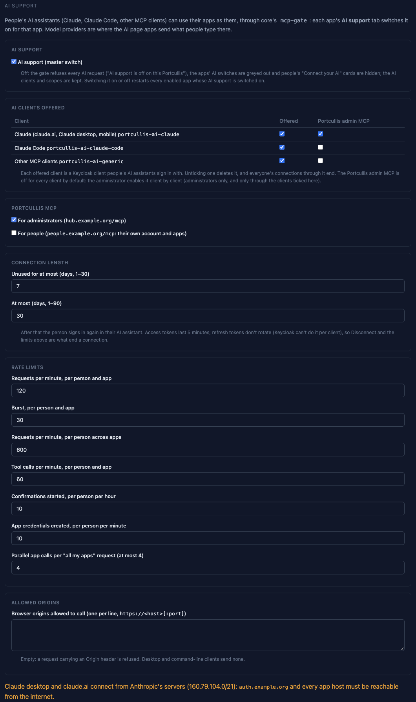
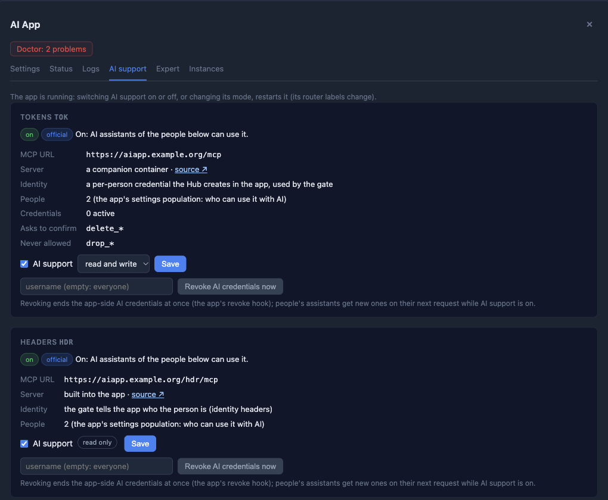

AI Support¶
People can use their Portcullis apps from Claude, Claude Code or another MCP client, and from an AI page, as themselves: the AI gets exactly the person's rights in each app, signs in with the person's passkey, and every request is checked and logged by core's mcp-gate. This page is the administrator's guide. What people see is in Connect your AI; the interfaces are in contracts §15.
AI support is off on a new install. Nothing reaches an app through MCP until you switch the master switch on and switch AI support on for that app.
How it fits together¶
graph LR
C[Claude, Claude Code,<br/>other MCP clients] -->|OAuth 2.1 + PKCE| KC[Keycloak<br/>auth.<domain>]
C -->|Bearer token| T[Traefik]
P[AI page<br/>LibreChat] -->|each person's token| T
T --> G[mcp-gate]
G -->|person's credential<br/>or identity headers| CO[App companions]
CO --> A[Apps]
G -->|X-Portcullis-MCP-Secret| H[Hub :8890<br/>Portcullis MCP]
H -->|gate files| GEach MCP endpoint is its own OAuth resource with its own scope:
| Endpoint | Who | What |
|---|---|---|
https://<app host>/mcp (an app's companion) |
the app's users (its settings population) | the app, as the person |
https://mcp.<domain>/mcp (All my apps) |
every signed-in person | every companion they can use plus their Portcullis account tools, one connection |
https://people.<domain>/mcp (Portcullis) |
every signed-in person | their own account and apps; delegated people management for delegates |
https://hub.<domain>/mcp (Portcullis (admin)) |
lldap_admin members, only through clients you enable it for |
the Hub: instances, settings, users and groups, backups, the doctor |
A token is minted for exactly one of them: a token whose audience names two
resources is refused at both, so an MCP client asks for one resource's scope
per token (checked by core's e2e-ai job on Keycloak 26.8.1).
A companion is the MCP server the AI talks to for one app: the app's
built-in MCP server or the upstream project's (or a vetted community
project's) published image, pinned by digest. Portcullis never writes MCP
servers for apps; templates declare their companions in the
ai: block, and each app's catalog page
has an AI support section.
Before you start: reachability¶
- Claude desktop, claude.ai and Claude mobile connect from Anthropic's
servers (
160.79.104.0/21), not from the person's device. For them,auth.<domain>and every app host people connect to must be reachable from the internet. Settings → AI says so. Claude Code and other local clients connect from the person's machine, so a LAN-only install works for them. - No certificates. No MCP client can present the person's YubiKey or browser certificate, so certificate methods never count for AI, and an app whose sign-in template needs a certificate in every alternative can't get AI support (the switch is refused with "needs a YubiKey or browser certificate on every sign-in"). A sign-in change that would make it so switches AI support off on that app first, and the preview lists it.
- Rate limits are per person, not per IP: every hosted Claude user comes
from Anthropic's range. Core's
rate-limit@file(per source IP) still stays in front of every MCP router and is shared by everyone whose client runs in Anthropic's cloud.
Settings → AI¶

| Setting | Default | What it does |
|---|---|---|
| AI support (master switch) | off | Off: the gate answers every AI request 503 "AI support is off on this Portcullis", the apps' AI switches are greyed out and people's "Connect your AI" cards are hidden; the AI clients and scopes are kept. Switching it on or off restarts every enabled app whose AI support is switched on |
| AI clients offered | all three, admin MCP off | Each offered client is a Keycloak client people's assistants sign in with: portcullis-ai-claude (claude.ai, Claude desktop, mobile), portcullis-ai-claude-code (loopback localhost / 127.0.0.1 port 33418), portcullis-ai-generic (other MCP clients, same loopback URIs). All are public clients with PKCE S256, consent and a passkey sign-in. Unticking one deletes it, and everyone's connections through it end. The Portcullis admin MCP column is off for every client until you tick it, client by client |
| Portcullis MCP | both on | For administrators (hub.<domain>/mcp) and for people (people.<domain>/mcp) |
| Connection length | unused 7 days, at most 30 | Keycloak's offline-session idle (1–30 days) and maximum (1–90 days, ≥ idle) for the AI clients. After that the person signs in again in their assistant |
| Rate limits | 120 requests/min per person and app (burst 30), 600/min per person across apps, 60 tool calls/min per person and app, 10 confirmations started per person per hour, 10 app credentials created per person per minute, 4 parallel app calls per "All my apps" request | Over a limit: 429 with Retry-After |
| Allowed origins | empty | Browser origins (https://<host>[:port]) allowed to call; empty: a request with an Origin header is refused. Desktop and command-line clients send none |
Access tokens last 5 minutes. Refresh tokens don't rotate: Keycloak 26.8 has no per-client switch, and rotating realm-wide breaks every forward-auth session. What ends a connection is the connection length above, the person's Disconnect on the People page, and every removal the Hub makes (which signs the person out of Keycloak). A stolen AI refresh token stays usable until one of those happens.
A Hub without the gate (no readable HUB_MCP_GATE_RECIPIENT_FILE or
gate secret) shows "This core has no mcp-gate": the gate file says AI support
is off and every AI request is refused. The settings are kept.
Unhealthy AI clients. If the Hub can't set up an AI client in Keycloak (an
untagged client with that id exists, or Keycloak refuses the scopes), the
client is left out of the gate file and off the People cards. Settings → AI
doesn't show this yet: GET /api/ai/settings has no health field. Check the
Hub's log when a client is missing from people's cards.
Switching an app on¶
Each instance page has an AI tab (deep link
#apps/<id>/ai):

- The companion's facts: its MCP URL, whether it is built into the app or
a companion container,
officialorcommunity, the identity mode, the number of people who can use it (the app's settings population), active app credentials, and the template's "asks to confirm" and "never allowed" tool patterns. - AI support and the mode: read and write or read only, where the
template offers both. Read-only hides and refuses the template's write tools
at the gate, and, where the app supports it, the companion is started
read-only too (
PORTCULLIS_AI_READONLY_<NAME>, read-only credential scopes). Nextcloud supports neither: there the gate alone enforces read-only (see Residuals). - Switching on or off, or changing the mode, restarts a running app (its router labels change); the tab says so before you save. On a disabled app the switch only saves the state.
- Status: on, off, failed (with the last error), unavailable
(switched on but refused now: master off, a template that needs a certificate), revoking (off, a
revoke_allis owed — at the next start, or after a template update, see the Doctor) and revoke pending (on, but kept off until the app's next start revokes its earlier credentials). - Refused while the master switch is off, the instance is being deleted
or restored, the template says
ai.unsupported, the sign-in needs a YubiKey or browser certificate, the companion alias would be longer than one DNS label, another container already answers to the alias, or a template update's revocation is still owed. - Revoke AI credentials now (not for identity-header companions, which
hold none): one person's, or everyone's (
revoke_all). People's assistants get new credentials on their next request while AI support is on. - Recent AI activity: the newest 20 lines of the gate's access log for the app (never arguments or results).
Switching on first revokes every app credential the companion's earlier life
left (revoke_all): a failure is a 502 and nothing changes. A failure after
the state is saved is an operation error (op ai) and saving the same again
re-applies every step.
An AI page instance (the ai-chat template) has no companion; its AI
support tab chooses its model providers.
Identity modes¶
How the person's identity reaches the app is the template's choice, shown on the tab:
| Mode | How | Leaving |
|---|---|---|
app_token |
The Hub mints a per-person app credential (portcullis-ai-<random>) in the app on the person's first request, through the template's mint hook; it is encrypted to the gate and injected on every call. Someone who never signed in to the app gets "Open |
The credential is marked revoking at once (the gate stops using it within seconds) and revoked in the app through the revoke hook, retried until it succeeds |
identity_headers |
The gate sends the person's username, email, groups and attribute headers plus a caller secret only the companion knows; the app trusts identity headers only from its companion, on a private trust network | Nothing to revoke: the gate refuses the person from their next request |
app_oauth |
The app is its own MCP OAuth server and signs people in through Portcullis (Keycloak, passkey). The gate is not in the path: Portcullis doesn't log, confirm, rate-limit or filter these AI actions; the app's own rules apply | The Hub runs the template's revoke hook for the person (below) |
Who can use it, and leaving¶
The people who can use a companion are the app's settings population: the
access group's members (minus expired memberships), or every signed-in person
when the app has no group access. The gate checks this on every request,
so a person removed from the group is refused from their next request, not at
token expiry. Expiries in expiring are refused from their time on.
When someone leaves:
- their
app_tokencredentials are revoked (above); - their upstream MCP sessions are closed;
- once they can use no AI resource at all (deleted, or in no population), the Hub deletes their consents and offline sessions for every AI client;
- a person's own Disconnect on the People page does the same for one client. Keycloak then refuses that client's refresh tokens (offline and online) at once, but access tokens already issued stay valid for up to 5 minutes. The gate's per-request population check still refuses a person who left.
app_oauth apps (Home Assistant). The Hub records who could use the app
while its AI support was on (<data>/ai/oauth-seen.json): each person's LLDAP
uuid and every Keycloak user id seen for them. A person who leaves:
- with a verified record (uuid and at least one Keycloak id) gets the
template's
revokewith their Keycloak id (sub), which ends the AI tokens of exactly that app account; - with an unverifiable record (no uuid, the uuid changed, the id lookup
failed three passes, or their record couldn't be written) makes the
companion's
revoke_allrun, which ends every person's AI-client tokens in that app (people reconnect), and the person is listed on the AI tab and in the Doctor as left before their account could be matched. Their web, Companion-app and long-lived tokens remain: deactivate or delete them in the app (Home Assistant: Settings > People), then Dismiss them.
Switching an app_oauth companion off runs revoke_all only. A disabled
instance, a policy or sign-in change are not leaving.
Confirmations¶
Destructive actions need the person, in their browser, signing in again with
a method the governing template accepts (the hub core page's template for
admin tools, the people one for people tools, the app's for a companion;
Fresh sign-in):

- What needs one: companion tools matching the template's
confirmpatterns, tools the companion marks destructive, and the destructive (D) tools of the Portcullis MCP — deleting, restoring over, revoking, running code, and every call that widens access (adding someone to an administrator or permission group, a weaker policy, public access on, …). - The AI gets a link (
https://people.<domain>/confirm/<id>, orhttps://hub.<domain>/confirm/<id>for admin tools) or a URL elicitation its client opens. The page shows what the Hub renders from the stored request — the action, its target, consequences and the exact arguments — never text the model wrote. Values taken from the request are quoted, and every invisible or reordering character (bidi controls, zero-width characters, unusual spaces) shows as\u…, so nothing on the page can be hidden. A request whose user, group or field names aren't valid is refused before any confirmation is created. - The person types the check (the app's name for companion tools; the instance id, the person's or group's name, or the domain for admin tools) and touches their passkey. A sign-in from before the request never approves it. Only the person it was created for can open it.
- Valid 10 minutes, single use, bound to the exact arguments: any change needs a new one. At most 10 created per person per hour and 20 pending. Kept in memory: a Hub restart expires them.
- The AI then retries the call. Declining needs no passkey.
What is logged¶
- The access log (
mcp_gate_data/access.jsonl): one line per MCP request through the gate — time, person, AI client, resource, instance and companion,directoraggregate, the method, the tool, the SHA-256 of the arguments, the decision (allow,deny:<reason>,confirm:<id>,rate_limited), the upstream status and duration. Never the arguments, a result, a token or a credential. Kept 90 days. When the log can't be written for more than 30 s, tool calls are refused ("AI activity can't be logged right now"). - The audit log: every change made through the Portcullis MCP is audited
exactly like its HTTP twin, plus
via: aiand the AI client. AI actions (ai.enable,ai.disable,ai.mode,ai.providers,ai.credential.mint,ai.credential.revoke,ai.connection.revoke,ai.confirm,settings.ai,ai.provider.*) are audited too. Users & Groups → Setup → Audit log has a filter: all changes, changes made via AI, or via AI, with the AI requests (the access log merged in; the last 100 of each). - People see their own connections and their last access-log lines on the People page.
app_oauthapps are not in either log.
Prompt injection: what limits the damage¶
Content the AI reads — issues, documents, dashboards, chat messages, entity names — can carry instructions. Portcullis doesn't try to detect that; it limits what such instructions can achieve:
- the AI has exactly the person's rights in each app, and nothing in apps they can't use;
- destructive tools need the person's passkey in their browser;
nevertools don't exist for the AI; - you can make any companion read-only;
- the Portcullis admin tools are only on
hub.<domain>/mcp, a separate connector an administrator adds deliberately — never in "All my apps" or on the AI page. Data from an app can't reach admin tools in the same conversation unless the administrator connected both; - secrets never enter the model's context, so injected text can't exfiltrate them;
- companions can't redirect the person to arbitrary URLs (only to the app's
own hosts and
people.<domain>), and can't use the person's model (sampling) or see their files (roots); - every call is logged with the tool and the argument digest;
- the People card tells people that what the AI reads goes to their AI provider, and Claude's own controls apply (per-tool "Blocked", approval prompts).
Residual: within a person's rights and outside the confirm lists, an
injected instruction can still make writes (comment on an issue, create a
task). That is the read-write mode you chose. "All my apps" and the AI page
apply the same per-app mode as the per-app endpoints. Your lever is the
per-app read-only mode; the person's is Claude's per-tool "Blocked" and
approval prompts.
The Portcullis MCP¶
The Hub's own MCP server, the only one Portcullis writes. Each tool calls the same Hub method as its HTTP twin, so permissions, guardrails, locks and audit are identical (the tool list is in contracts §15.10).
- Admin (
hub.<domain>/mcp): onlylldap_adminmembers, only through the clients whose admin flag you ticked, and only while "For administrators" is on. Its consent screen says "Manage Portcullis as you — administrator". - People (
people.<domain>/mcp, also inside "All my apps" asportcullis__…tools): the person's apps, profile, AI connections, the directory as the People page shows it. Delegates also getupdate_person,invite_personanddelete_person— only onpeople.<domain>/mcp, never in "All my apps" or on the AI page. - Classes: R read, W write (audited), D needs a confirmation, U needs a secret from the person: the tool returns a link to the Hub's own form (domain tokens, secret settings, passwords, provider keys) and the secret is typed there, never in the chat.
- Secrets never reach the model: no tool takes a secret argument; results never carry invite links, passwords, file-share passwords, share tokens, provider keys or any Hub secret, and every result passes one redactor (if it can't be built, the result is hidden).
save_hub_settingscan turn the admin MCP off, never on. Credential creation and the confirmation routes are never tools: an AI can't approve its own confirmation.
The AI page¶
An AI page is an instance of the ai-chat template (LibreChat): people chat
there with the models you choose, and its one MCP server is "All my apps",
reached with each person's own token of the instance's ai-chat-mcp
client (scope mcp:all, consent in Keycloak). Everyone who can open the
instance can use every provider selected for it: to give a group other
providers, add another ai-chat instance with its own access group (one
AI page per audience).
Model providers (Settings → AI → Model providers):
| Kind | Fields | Secrets |
|---|---|---|
LiteLLM (litellm) |
an installed LiteLLM instance (the Hub fills in its URL) | key (a virtual key you create in LiteLLM) |
OpenAI-compatible (openai_compatible): Ollama, vLLM, LocalAI, OpenRouter, Mistral, … |
base URL | key (optional: Ollama needs none) |
| Anthropic, OpenAI, Google | base URL (optional) | key |
| Azure OpenAI | instance name or base URL, API version, deployments | key |
- A kind is offered only while an installed AI page template supports it.
The
ai-chattemplate renders all of the above; it doesn't offer AWS Bedrock (SigV4 keys). Google is reached through its OpenAI-compatible API, so a custom Google base URL must be OpenAI-compatible. Anthropic, OpenAI and Google allow one provider each per instance. - Secrets are write-only: typed in password fields, stored in
<data>/ai/provider-secrets.json(0600) and in the.envof the AI page instances that selected the provider, never shown again ({set, updated_at}), never in logs, the audit, answers or tool results. - Credentials: the secrets here (shared by everyone on the AI page) or
each person's own key (
per_person: people enter it in LibreChat). Azure OpenAI can't use per-person keys: the AI page can't take each person's own Azure key, so the Hub refuses that choice (400); use the secrets here. A provider whose key isn't set is left out until it is. - Each provider shows the data-egress note people see: "What people send on the AI page, and what their apps return to it, goes to
- Selecting providers on the instance's AI support tab, changing a provider,
its secret, or moving the LiteLLM instance's host restarts the AI pages
that use it (the dialog names them). A provider in use can't be deleted
(
409naming the instances); neither can a LiteLLM instance a provider points at. - With no provider, the page says "No model provider configured; ask your administrator"; when its configuration is refused, "The AI page's model configuration was refused; ask your administrator".
What the ai-chat template locks down: its api service refuses to start
without a rendered configuration (if even the refusal fallback can't be
written, nothing starts); OpenID sign-in only (no local accounts), nobody is a LibreChat administrator, nobody can add MCP servers,
no agent actions, web search, code interpreter, file search or OCR (the
calculator is the only built-in tool), no shared links, and a link can't
submit a prompt by itself. Details on the AI Chat page.
Residuals¶
What the design does not cover, stated plainly:
- Access tokens outlive a disconnect by up to 5 minutes; refresh tokens don't rotate (above).
app_oauthapps are outside the gate. For Home Assistant:- Assist exposure is instance-wide, not per person: every person's MCP client sees and controls the same exposed entities; the person's account only decides attribution and administrator-only actions;
- an authorization code Home Assistant issued just before someone left can still be exchanged within its 10 minutes; a later reconcile ends the resulting token only if it runs after that exchange;
- Home Assistant's
local_onlymeans its local network (private ranges, the LAN included), not loopback; - backups of its
/configcarry the hook user's token, rotated at the next container start after a restore.
- Read-only is enforced by the gate alone where the app can't scope a credential or start its companion read-only (Nextcloud: its app passwords are full-scope): the gate hides and refuses write tools; the credential itself could write.
- Losing
secrets/mcp-gate/age.keytakes all AI support down. The AI credentials the Hub stores are encrypted to that key../portcullis up(orinit,upgrade,restore) generates a new key when it is missing, and from then on the gate can't decrypt the stored credentials, so it refuses the whole credentials file: every AI resource answers503(every app's MCP, the Portcullis MCP and "All my apps"), and./portcullis statusshows "mcp-gate: refusing every AI request (503)" with the reason. Restore the key from a backup ofsecrets/if you can. Otherwise:- the Hub re-encrypts the identity-header companions' caller secrets to the new key at its next configuration write, with nothing to do;
- app credentials can't be re-encrypted (the Hub never holds them in
clear): on each app's AI support tab, switch each companion that
uses app credentials (
app_token) off, save, then on again. Switching off revokes its credentials in the app and drops them, and each person's credential is minted again on their next request. Switching the master switch off and on doesn't drop them.
- A settings change through the admin MCP can race a membership change.
save_settingsrecomputes the preview (plan_hash) just before it saves, which catches a directory change up to then; one landing in the short moment between that recompute and the save isn't caught (the save re-checks the stored inputs, not the directory). - Nextcloud: its companion answers a few routes without a credential to
any container on
portcullis-proxy(GET /api/v1/statuswith the version,/app/and its sub-pages,/health/live,/health/ready); they show no person's data but disclose the version. A person whose username is longer than 64 characters can't use Nextcloud's AI support. The AI can't share or read shares. A revoked app password works for up to 10 s (Nextcloud's token cache). The companion is maintained by one person. Any container onportcullis-proxycan send the companion wrong credentials; Nextcloud's brute-force protection counts them against the companion's address, which every AI request comes from, so it can slow everyone's AI requests down (sign-in itself still holds). Re-used usernames: Nextcloud keys accounts on the username (user_oidc stores no Keycloak id, so the mint ignores thesubthe Hub sends): a deleted person's username given to someone new gets the former person's Nextcloud account, on the web and through AI alike. Delete the former person's Nextcloud account (occ user:delete) before re-using a username. - Grafana's trust network: Grafana trusts identity headers from its
companion's private network. A container that runs with host networking
and
NET_RAW(Docker's default capabilities include it) can forge traffic onto that bridge from the host side; templates with an identity-header companion may not use host networking themselves, but another app's host-network container could. Run host-network apps you trust only. - The AI page (LibreChat):
- a provider base URL you enter isn't SSRF-filtered (only URLs people enter are); point it only at hosts you mean;
- accounts are keyed on the person's Keycloak id (
sub): a person deleted and re-created under the same name gets a newsuband LibreChat refuses the sign-in (the old account has anotheropenidId) until you delete the old account in its database; extra_hostspointsauth.<domain>andmcp.<domain>at Traefik inside the container, so it works without hairpin NAT; a LiteLLM provider onllm.<domain>or any other Portcullis-hosted provider URL still needs DNS that resolves inside containers;- the AI client asks for no
offline_access: a person reconnects "All my apps" when their token can't be refreshed any more.
- Shared fields widen without a confirmation. A custom field shared with
apps (§9.6) reaches every header-auth app as an
X-Forwarded-Attr-*header and every app client's tokens as anattr_<field>claim. Creating a field, or turningshare_with_appson, through the admin MCP is a plain write (W): only changes to a field a guarding group's rule uses need a confirmation. - Apps that link accounts by username or email. Keycloak links LLDAP
accounts by their immutable uuid, so an account deleted and re-created under
the same name is a new person with a new
sub(no passkeys, sessions, consents or AI connections carry over). An app that matches accounts bypreferred_usernameor email instead ofsubwould attach the newcomer to the old app account; templates key onsub(hardening). Nextcloud is the exception (Nextcloud). An AI credential belongs to the LLDAP account it was minted for: a re-created name gets a new one, and the former holder's is revoked, never reused. The Hub keeps that link in<data>/ai/credential-uuids.json; if the file can't be read, every app_token credential counts as unverifiable: the next pass revokes them all and mints fail until the file is fixed or removed (no doctor entry names it yet). - Local networks through the admin MCP.
set_local_networksis a plain write only when every network is inside the current list (narrowing); anything wider needs a confirmation, and so does going back to the defaults (10.0.0.0/8,172.16.0.0/12,192.168.0.0/16,fc00::/7,100.64.0.0/10) when they are wider than the current list. Narrowing can still switch file sharing off. Local networks don't gate AI access itself. - Companions are reachable on
portcullis-proxyby their alias from any app container; each serves nothing without its credential or caller secret. - Template source syncs are plain writes.
sync_sourcesthrough the admin MCP needs no confirmation; a changed manifest of an enabled app (for example one that turns public access on by default) takes effect at its next restart. Enabling an app is still classed by its own rules. - Unhealthy AI clients aren't shown in the UI (above).
App notes¶
Why each companion was vetted, and what to know. Every app's catalog page has its AI support section; these are the notes behind them.
Gitea¶
- gitea-mcp is the official server of the Gitea project (MIT, frequent releases), pinned by digest and tracked by Dependabot.
- Every call runs as the person with their own Gitea access token
(
portcullis-ai-<random>): read scopes only in read-only mode (where gitea-mcp also hides its write tools); read-write adds write scopes for repositories, issues, organisations, packages and notifications. - No shared admin identity runs tool calls. The local admin
portcullis-hooksonly lists and deletes tokens for the mint and revoke hooks; deleting it breaks AI support until the next start recreates it. - Tokens are revoked when a person leaves, when AI support or its mode changes, and after a restore. Someone who never signed in to Gitea gets "Open Gitea once, then try again".
- Every tool name containing
deleteasks for a confirmation (also as a method of a consolidated tool); setting repository or organisation Actions secrets is never offered (the value would pass through the model). File deletions throughcreate_or_update_fileare commits, without a confirmation. - Re-used usernames. The Hub sends the person's checked Keycloak id
(
sub) with every mint, and the hook mints only for the Gitea account Gitea signs that id in to. If a person is deleted and their username is given to someone new, the newcomer gets no token for the former person's account: the mint fails (shown on the AI tab), as their web sign-in does. Delete or rename the former person's Gitea account (Site Administration → User Accounts), then the newcomer signs in once. - While AI support is on,
https://<host>/mcpis the AI endpoint, so a Gitea user or organisation namedmcploses its profile page (its repositories stay reachable): don't use that name. - Git over SSH: a second Gitea instance needs another host port or none.
Grafana¶
- mcp-grafana is the Grafana project's official server (Apache-2.0), pinned by digest, with no service account: identity headers.
- Grafana trusts
X-Forwarded-Userfrom Traefik and, while AI support is on, from its companion on the private trust networkmcp-trust(only Grafana and the companion).trust.shreads that network's prefix from Grafana's own interface at every start, without the gateway, broadcast and Grafana's own address, and refuses to start when it is ambiguous. - The person's Grafana role comes from the template's Role setting through
the header. Read-only (the default) hides the write tools;
grafana_api_requestand notification routing changes are never offered; deletes and alert rule and silence writes ask for a confirmation.
Nextcloud¶
- nextcloud-mcp-server (cbcoutinho, AGPL-3.0) is a community companion, pinned by digest. It passed because its multi-user Basic pass-through mode builds a Nextcloud client per request from the caller's credential, checks it against Nextcloud first and holds no credential of its own.
- Each person gets their own app password
portcullis-ai-<random>(minted withocc user:auth-tokens:addfor their OIDC uid), shown in their "Devices & sessions"; deleting it there makes the next request mint a new one. Someone who never signed in gets "Open Nextcloud once, then try again". - Only files, calendar and contacts tools; deletes and calendar writes (which can send invitations) ask for a confirmation; sharing is never offered.
- It is maintained by one person, so updates are re-vetted. See the residuals above.
Home Assistant¶
- Home Assistant's built-in MCP Server integration, with Home Assistant as
its own OAuth server: people connect to
https://<host>/api/mcpand sign in through Portcullis. Tools run as their own Home Assistant account and see only Assist-exposed entities. Portcullis doesn't log or confirm these AI actions. - AI support on adds the integration with administrators only off and the Assist API only; an administrator can change either in Home Assistant. Switching it on or off ends every OAuth client token except Home Assistant's web frontend and Companion apps; long-lived tokens are kept.
- Claude: "Use Claude's published identity" (no Portcullis client id).
Claude Code:
claude mcp add --transport http --scope user home-assistant https://<host>/api/mcp, without--client-id. - The hidden "Portcullis hooks" system user can't sign in and is rotated at every start. See the residuals above.
AI Chat¶
The AI page (above). LibreChat minors and Meilisearch are updated by hand; MongoDB is 7.0 (8.x refuses some current kernels).
GitLab¶
GitLab's MCP server accepts only GitLab's own OAuth tokens, not personal access tokens; that per-person OAuth path isn't verified with Portcullis yet. An administrator can turn on GitLab's own "Allow access to the MCP server"; Portcullis then neither logs nor confirms.
Mattermost¶
The Agents plugin's MCP endpoint needs an Enterprise licence, and Team Edition lets people rename their accounts, so Portcullis can't tie an account to a person.
NetBird¶
The official server acts as one shared service user, not as each person: network control planes stay out of AI reach until one supports per-person access.
Manual checks¶
The checks CI can't make (real Claude clients, a hardware passkey, live Keycloak) are on the manual checklist.